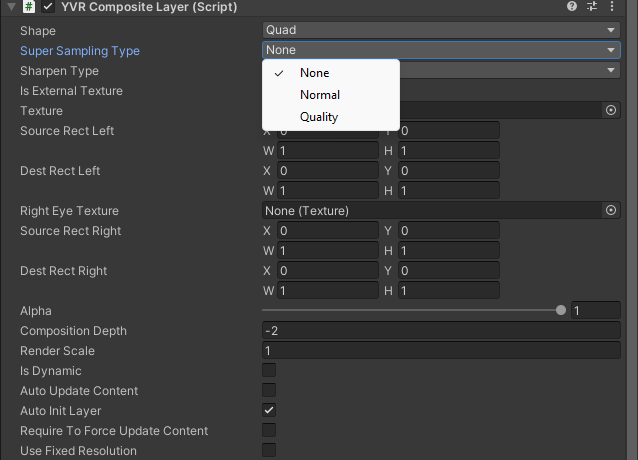

超采样和锐化
启用超采样或锐化功能可以提高图像质量。超采样可以让画面质量进一步提升，适用于解决下采样时的闪烁及摩尔纹等问题。锐化可以提升清晰度，改善上采样时的图像模糊问题。
开启超采样功能
使用合成层选择超采样类型：
- 在 Compositor Layer 设置中，

选择 Super Sampling Type： - None - Normal - Quality
开启锐化功能
使用 YVR 管理器选择锐化类型：
- 在 YVR Manager 设置中，

选择 Sharpen Type： - None - Normal - Quality
注意事项
- 使用锐化时，申请的 swapchain 请开启多层 mipmap，并在提交前为其每层 mipmap 生成纹理数据。
- 在 OpenXR 中，所有设置都只是建议，合成器可以根据需要启用或禁用它们。
- 合成图层过滤需要更多的 GPU 资源。对于锐化和超采样算法尤其如此，在开发时，您应该权衡增加的视觉保真度与提供最佳 VR 用户体验所需的额外 GPU 资源。
示例
请参考以下示例项目。
打开一个新项目或当前项目。
导入最新版 SDK。
在 Project 面板下，选择 Pacakages > YVR Core > Scenes > CompositeLayer。
在 CompositeLayer 文件夹中，选择 CompositeLayerSuperSamplingSharpen.unity 打开该场景。
在 File > Build Settings... 下，选择 Add Open Scenes。
选择 Build 并为文件命名。
在设备上安装 APK 文件。